SATSTREET
Abstract
CityViews
Pairing satellite and street-level imagery is widely assumed to improve urban vision-language models (VLMs), but aggregate benchmarks rarely reveal when the second view actually helps. We introduce CityViews, an OpenStreetMap-grounded benchmark designed to measure this marginal value directly. CityViews pairs marked satellite tiles with road-aligned street-level images across 40 cities and 12 tasks, spanning urban-attribute questions about a single location and cross-view questions whose answers require correspondence between views. Every question is evaluated under three matched input conditions — satellite only, street-level only, and both — from which we derive fusion synergy: the accuracy gain of both views over the stronger single-view input. Even when a fine-tuned 9B VLM is provided with the satellite tile and all four street-level views, accuracy on seven urban-attribute tasks improves by only +1.6 points over the stronger single view. On five cross-view tasks, by contrast, synergy reaches approximately +47 points for the same model, where single views sit near chance. The small urban-attribute gain is robust across the raw backbone, inference-time pruning, and reduced training-time street-view budgets. CityViews shows that the value of a second urban view is task-dependent: large when the answer depends on the relationship between views, but small when either view already provides sufficient evidence.
Keywords: Geosensing · Vision-language models · Multi-view fusion
The benchmark
Built deterministically, from source
Every label comes from OpenStreetMap tags or coordinate geometry — no human annotation, and no LLM or VLM anywhere in the pipeline. The same OSM snapshot and the same generation code regenerate the benchmark exactly.
40
cities
32
countries, 6 continents
12
tasks, 2 regimes
34,484
questions
4,168
locations
0
human annotations
Each location is one marked satellite tile (Esri World Imagery, NAIP or IGN — sub-metre, 91% Esri) paired with four road-aligned street-level views (forward, backward, left, right). Questions are instantiated from ten hand-written paraphrase templates per task; distractors are drawn deterministically from fixed per-task class inventories. Splitting happens at the location level, and a shared held-out benchmark split of 4,734 questions is defined first and kept identical across both training strategies, so no split leaks into it.
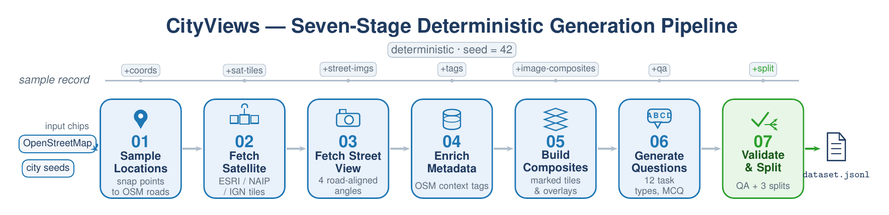
The protocol
One question, three inputs
The question text and the four answer options are held fixed; only the images change. Any difference in accuracy is therefore attributable to the imagery, not to language.
SatSatellite onlythe marked overhead tile, nothing else
SVStreet onlythe four road-aligned street-level views
FullBothtile + all four street views — the most generous fusion setting the data allow
synergy = accFull − max(accSat, accSV)
Following equivalence-testing logic, ±3 points is fixed as the smallest synergy of practical interest: a per-task gain inside that band is read as no meaningful benefit from the second view.
Try the ablation
CityViews-9B-SU on the 4,734 held-out benchmark questions. Pick a task.
—
fusion synergySelect a task to see how much the second view buys.
Twelve tasks, two regimes
The split is by construction
Seven urban-attribute tasks ask about a property of one location — either view alone may already suffice. Five cross-view tasks ask about the correspondence between the two views — a single view is at chance by construction. Each cell below shows a marked satellite tile over a street-level view from the same location.
SAT
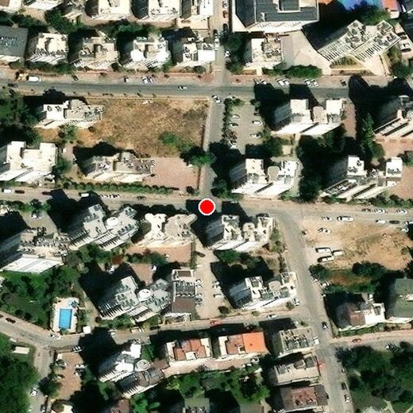
STREET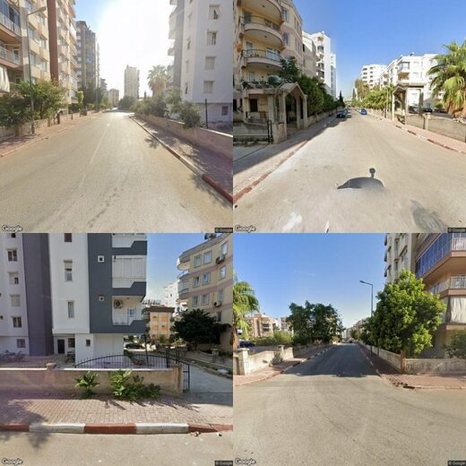
SAT
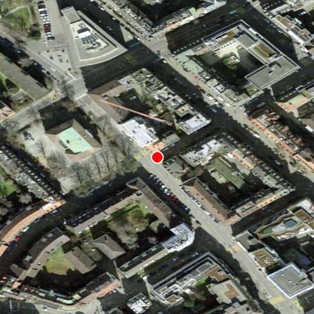
STREET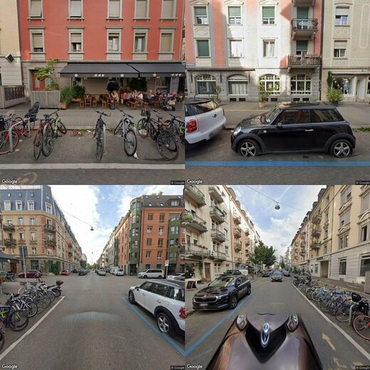
SAT
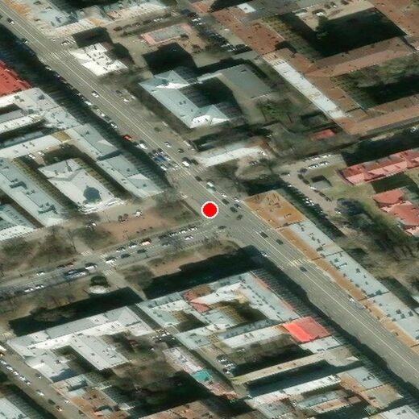
STREET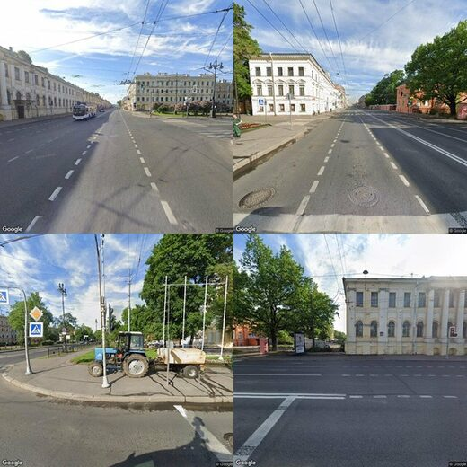
SAT
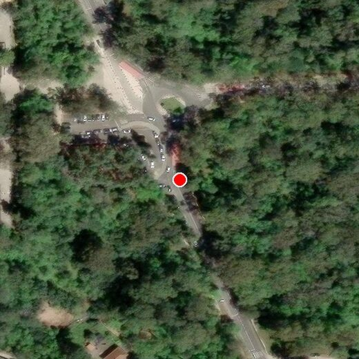
STREET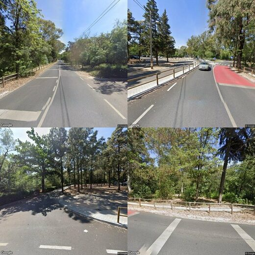
SAT
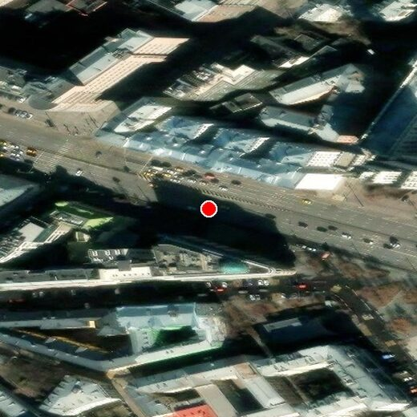
STREET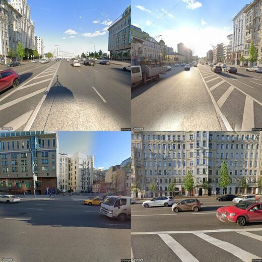
SAT
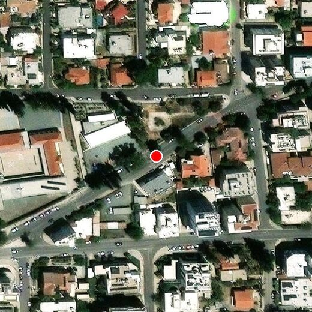
STREET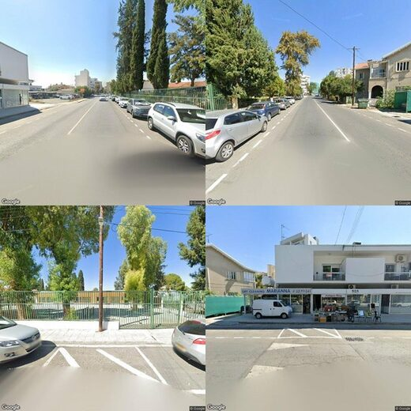
SAT
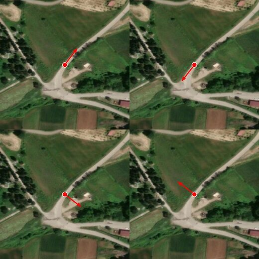
STREET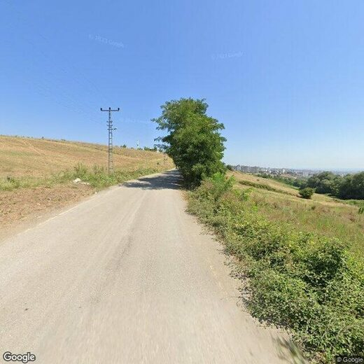
SAT
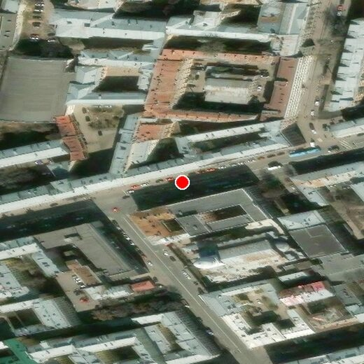
STREET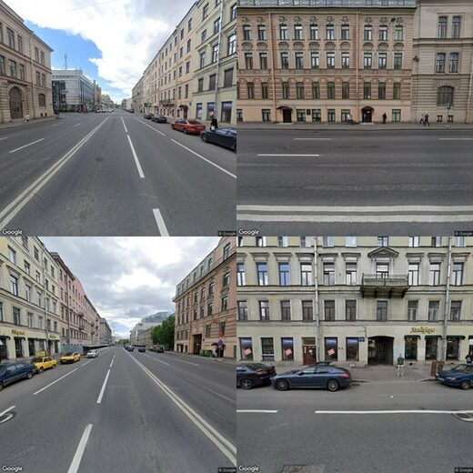
SAT
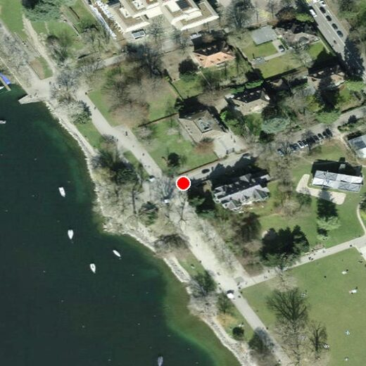
STREET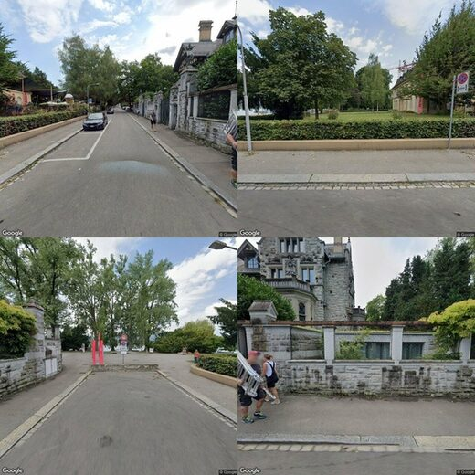
SAT
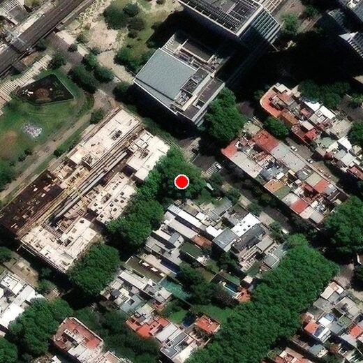
STREET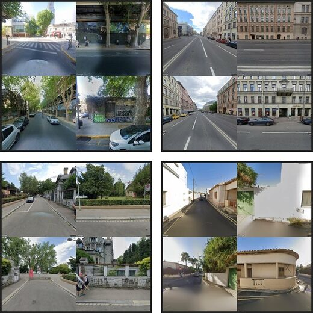
SAT
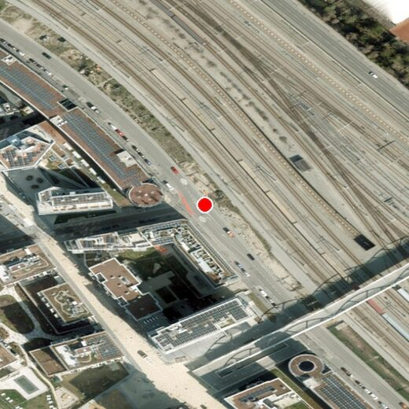
STREET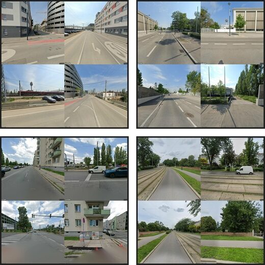
Satellite tiles © Esri and its data providers, USDA (NAIP), IGN · street-level imagery © Google. Synergy values are for CityViews-9B-SU on the held-out benchmark split.
Results
The same model, opposite answers
On urban attributes the two views are largely redundant — either alone reaches about 64%, and holding both adds +1.6 points averaged per task, inside the ±3-point equivalence band. On cross-view tasks the same model goes from chance to 81.6% only when it holds both views.
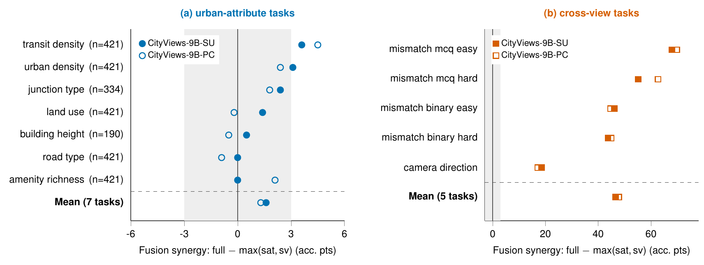
| Task | n | Sat | SV | Full | Δsat | Δsv | Synergy |
|---|---|---|---|---|---|---|---|
| Urban-attribute tasks | |||||||
| amenity_richness | 421 | 53.0 | 55.6 | 55.6 | +2.6 | +0.0 | +0.0 |
| building_height | 190 | 63.7 | 66.3 | 66.8 | +3.2 | +0.5 | +0.5 |
| junction_type | 334 | 74.0 | 71.3 | 76.3 | +2.4 | +5.1 | +2.4 |
| land_use | 421 | 72.0 | 72.5 | 73.9 | +1.9 | +1.4 | +1.4 |
| road_type | 421 | 69.6 | 76.7 | 76.7 | +7.1 | +0.0 | +0.0 |
| transit_density | 421 | 45.8 | 44.9 | 49.4 | +3.6 | +4.5 | +3.6 |
| urban_density | 421 | 71.5 | 64.8 | 74.6 | +3.1 | +9.7 | +3.1 |
| Mean over 7 tasks | 2,629 | 64.2 | 64.6 | 67.6 | +3.4 | +3.0 | +1.6 |
| Cross-view tasks | |||||||
| camera_direction | 421 | 22.8 | 25.2 | 43.7 | +20.9 | +18.5 | +18.5 |
| mismatch_binary_easy | 421 | 51.8 | 52.7 | 98.8 | +47.0 | +46.1 | +46.1 |
| mismatch_binary_hard | 421 | 43.7 | 44.2 | 87.9 | +44.2 | +43.7 | +43.7 |
| mismatch_mcq_easy | 421 | 24.7 | 23.3 | 92.6 | +67.9 | +69.4 | +67.9 |
| mismatch_mcq_hard | 421 | 25.4 | 29.7 | 84.8 | +59.4 | +55.1 | +55.1 |
| Mean over 5 tasks | 2,105 | 33.7 | 35.0 | 81.6 | +47.9 | +46.6 | +46.6 |
Does the benchmark separate models?
Zero-shot generalist VLMs land at 43.8–53.5% overall; task-tuned CityViews-9B reaches 73.4% and still does not saturate the benchmark — amenity_richness stays below 60% and camera_direction below 44%.
| Task | n | Qwen2.5-VL-7B | Qwen3.5-4B | Qwen3.5-9B | Qwen3.5-9Br | Gemma-4-12B | CV-9B-SU | CV-9B-PC |
|---|---|---|---|---|---|---|---|---|
| Urban-attribute tasks | ||||||||
| amenity_richness | 421 | 31.8 | 35.4 | 36.3 | 35.9 | 35.6 | 55.6 | 58.7 |
| building_height | 190 | 57.9 | 61.6 | 56.8 | 62.6 | 61.6 | 66.8 | 66.8 |
| junction_type | 334 | 57.5 | 50.0 | 55.7 | 65.0 | 66.5 | 76.3 | 75.1 |
| land_use | 421 | 55.6 | 55.6 | 53.2 | 54.6 | 47.3 | 73.9 | 75.3 |
| road_type | 421 | 50.6 | 57.0 | 53.0 | 59.9 | 65.3 | 76.7 | 76.5 |
| transit_density | 421 | 28.0 | 34.2 | 31.4 | 30.2 | 28.0 | 49.4 | 50.1 |
| urban_density | 421 | 41.8 | 36.3 | 39.0 | 38.2 | 37.3 | 74.6 | 65.1 |
| Cross-view tasks | ||||||||
| camera_direction | 421 | 24.7 | 21.4 | 23.5 | 26.1 | 25.2 | 43.7 | 42.3 |
| mismatch_binary_easy | 421 | 59.1 | 74.4 | 87.2 | 80.3 | 79.8 | 98.8 | 97.4 |
| mismatch_binary_hard | 421 | 45.6 | 58.0 | 72.9 | 70.5 | 64.6 | 87.9 | 90.7 |
| mismatch_mcq_easy | 421 | 39.7 | 45.8 | 51.3 | 66.0 | 43.2 | 92.6 | 96.2 |
| mismatch_mcq_hard | 421 | 33.7 | 38.5 | 39.4 | 52.5 | 34.7 | 84.8 | 86.0 |
| Overall | 4,734 | 43.8 | 47.3 | 50.0 | 53.5 | 49.1 | 73.4 | 73.4 |
The small urban gain is not an artefact
−0.9pts
… of fine-tuning
The raw zero-shot Qwen3.5-9B backbone shows the same near-zero urban synergy (−0.9), while cross-view synergy stays large (+22.9). So it is not a LoRA artefact.
+0.5pts
… of the view budget
Train with one forward street view instead of four: full-input urban accuracy moves 67.6 → 65.3, and synergy from +1.6 to +0.5. The pattern survives.
86.9%
… of inference-time views
Pruning Qwen3.6-27B to the forward view alone retains 86.9% of full-input correct answers — close to the best single-view selector (87.5%). Keeping no street view at all still retains 61.7%.
Scope. Fusion synergy is a behavioural quantity: it measures the gain a model extracts from both views, not the information-theoretic complementarity of the views themselves. The claim is limited to CityViews — four-option multiple-choice urban-attribute questions at these tile resolutions, with OSM-certified context labels and Europe-weighted coverage. We do not claim satellite imagery is uninformative, or that fusion fails in general.
At the workshop
Poster
Ten numbered panels in speaking order — problem, benchmark, protocol, tasks, headline, breakdown, robustness, takeaways. Every number on it is traced back to a table in the paper.
Cite
BibTeX
@inproceedings{demirci2026cityviews,
title = {CityViews: Benchmarking Satellite and Street-Level Imagery
in Urban Vision-Language Models},
author = {Demirci, Alperen and Bayraktar, Ezel and Amanzhol, Mukhamediyar
and Sattout, Adam and Erdem, Erkut and Erdem, Aykut},
booktitle = {Proceedings of the European Conference on Computer Vision (ECCV)
Workshops},
year = {2026}
}